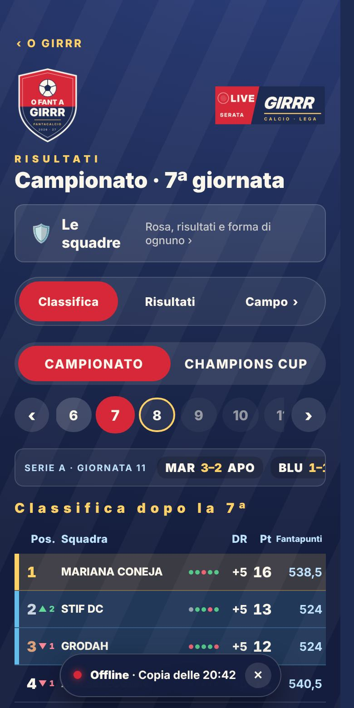

Già online
Copia offline
In treno o in galleria O Girrr si apre lo stesso: mostra l'ultima copia salvata sul telefono, rinfrescata ogni 30 minuti.
- Tutte le pagine di Lega e Stadio, lo Spogliatoio, classifica, risultati e Giornale
- Curva, Totogirrr e Derby: l'ultima versione che hai aperto
- Con la rete lenta aspetta al massimo 4 secondi, poi apre la copia
- Avviso «Offline · Copia delle …» e «Di nuovo online»; con la ✕ resta chiuso finché non chiudi l'app
Dove: Tutte le pagine, avviso in basso.